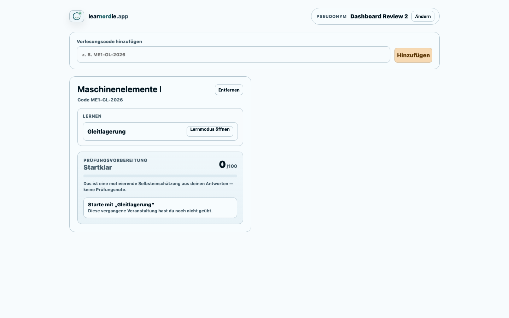
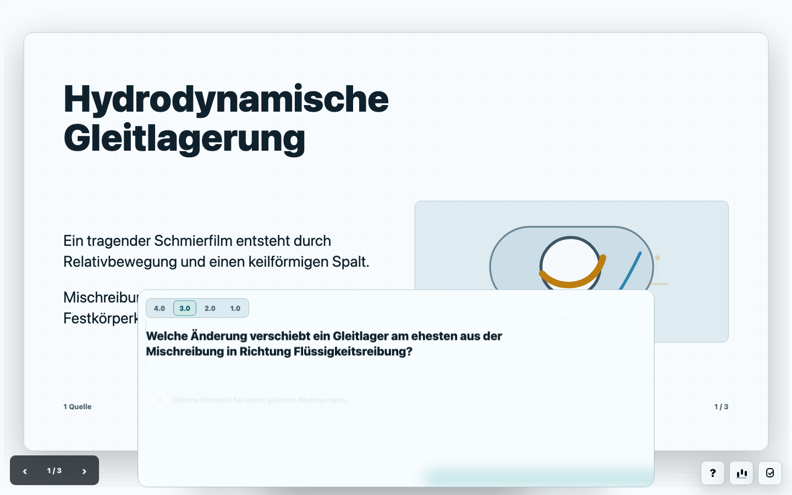
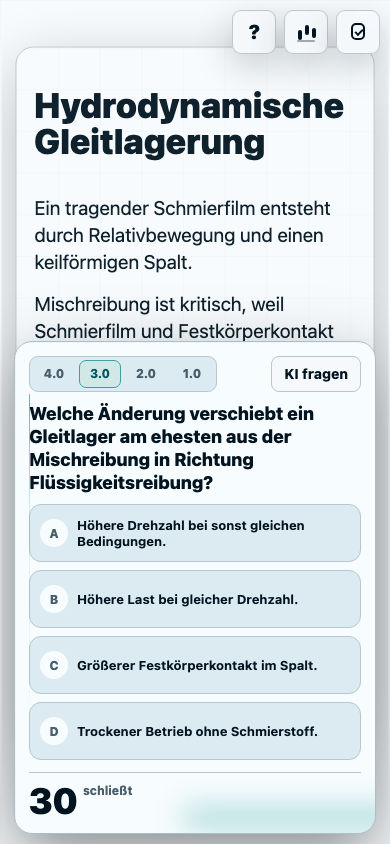
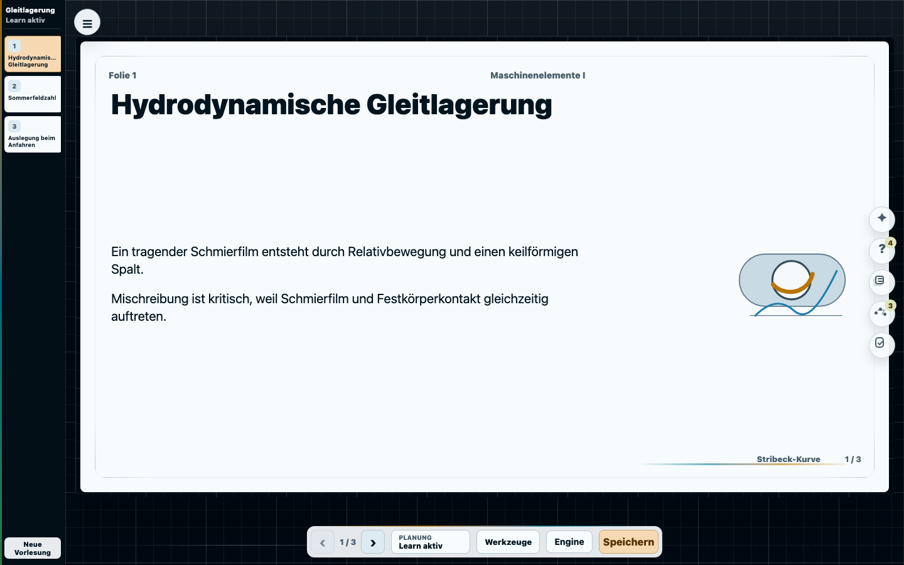

Hydrodynamische Gleitlagerung
Fragen, Quellen und Analytics bleiben an der Folie verankert, statt in einem Admin-Dashboard zu verschwinden.
Eine Folienbühne für technische Lehre: Live-Fragen, KI-Erklärungen, anonymes Lernfeedback und ein Learn-Modus, der bis zum Prüfungstag weiterarbeitet.
Fragen, Quellen und Analytics bleiben an der Folie verankert, statt in einem Admin-Dashboard zu verschwinden.
Student Dashboard, Learn-Modus, mobile Frage und Referentenstudio sind die Kernflächen. Die Folie bleibt der Anker; Fragen, KI, Quellen und Analytics öffnen kontextnah.




Ein Link oder ein Code reicht. Studierende wählen ein Pseudonym, beantworten Live-Fragen und sehen später im Learn-Modus, wo sie stehen.
Das Studio behandelt die Folie als Arbeitsobjekt. Material, Fragen, Evaluation, Transcript und Lernsignale öffnen kontextnah am Slide.
Next.js, Postgres, Resend, private Workspace-Pakete für Slide Engine und Agent Runtime, plus ein serverseitiger Responses-Proxy für KI-Funktionen.
Production-ready bedeutet nicht nur Build grün. Die App wird über reale Playwright-Flows mit sauberem Browserprofil geprüft.